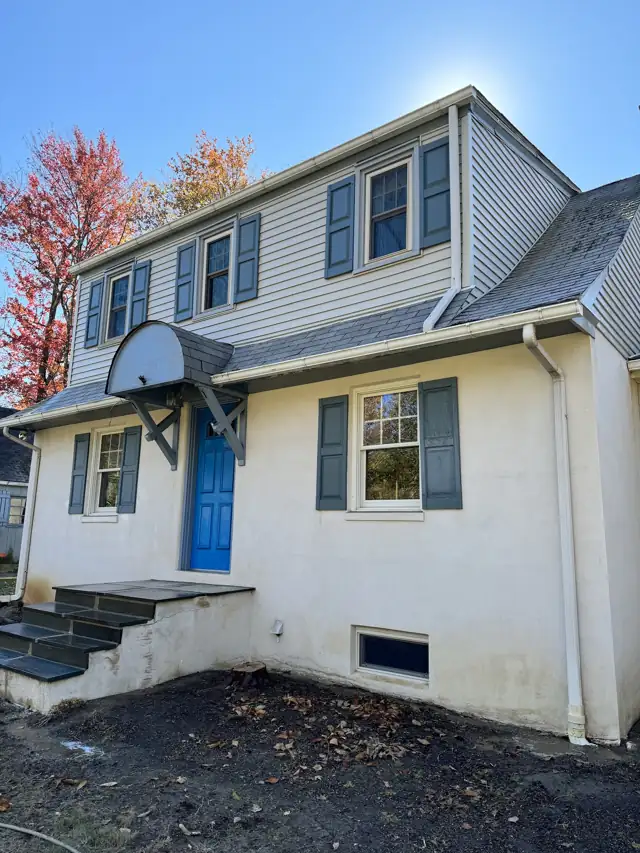

—Costello Pro Wash · Central Bucks
Doylestown house washing.
Soft washing for siding and stucco, pressure washing for concrete, and deck, fence and patio cleaning for Doylestown homes. Mike works out of Southampton, so you deal directly with the owner.
Free estimate
Two quick steps. Mike gets back to you himself.
Rather talk? Call or text (267) 666-7099. Open daily 9 AM to 9 PM.

01Services in Doylestown
Six services. One owner.
- House washingVinyl siding
- Soft washingSiding
- Deck cleaningDeck boards
- Fence cleaningVinyl and wood fence panels and posts.
- Patio & paver cleaningPatios
- Concrete cleaningDriveways
See before-and-after photos, all 59 reviews and common questions. Also serving Southampton · Bensalem.